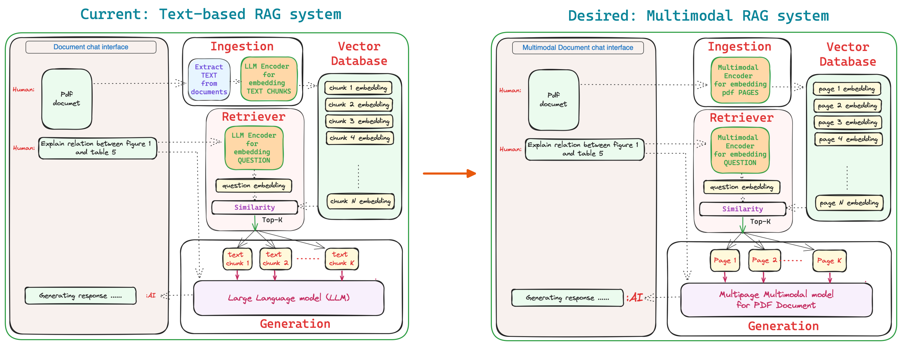

This research project aims to build a RAG (Retrieval-Augmented-Generation) system with a Multipage Multimodal Transformer to chat with your PDFs

How build such a system?
1. Train multimodal model for Q&A on single pdf page with text, table, chart, plot and figures.
2. Extend this multimodal architecture to handle multiple pages.
3. Train this new multipage multimodal model for Q&A on multipage pdfs.
4. The model will always will have page limits, hence need to build a retriever which can fetch best top-k pages for Q&A.
5. Some test text